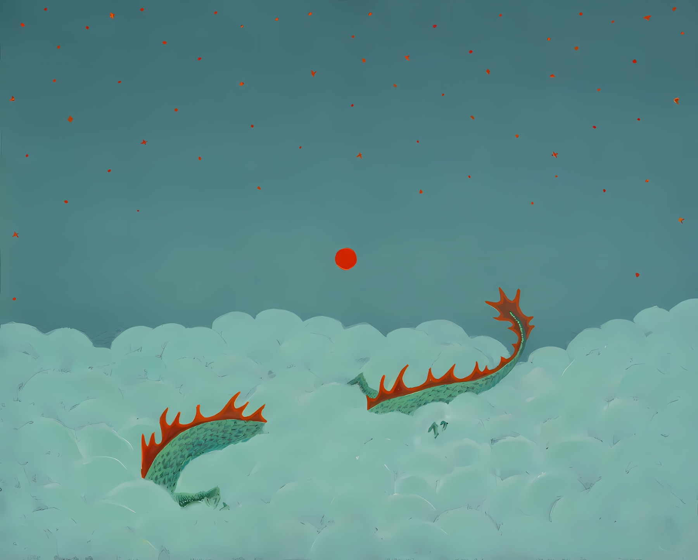
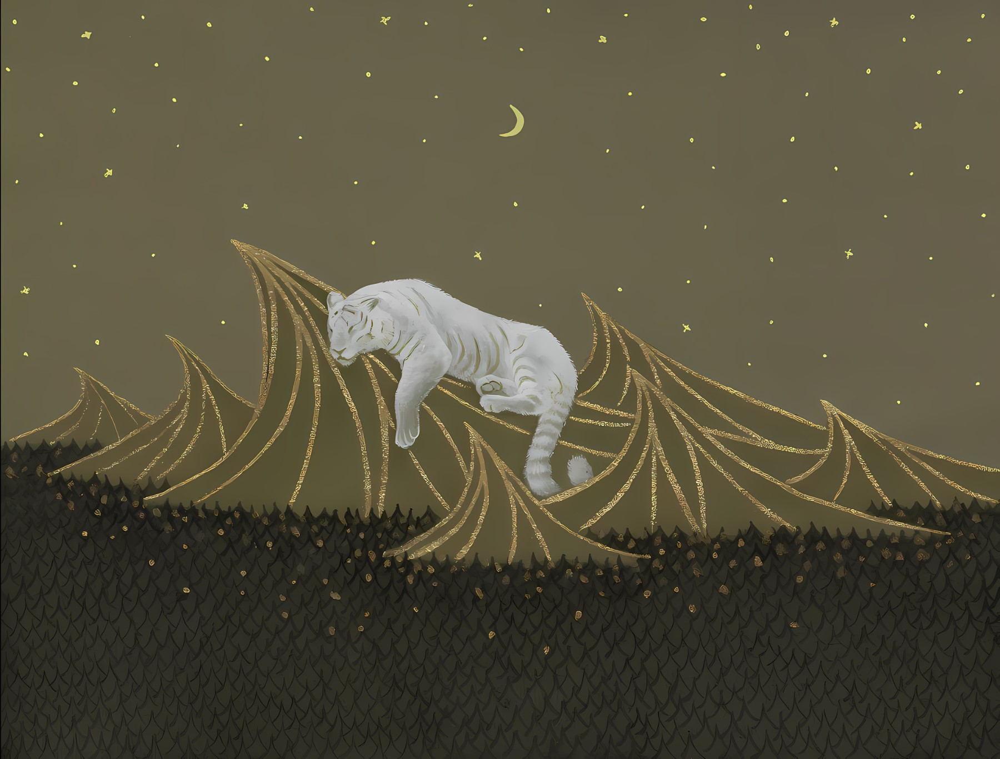

| (前)网络工程师 | 兴趣:兴趣泛滥 | 毁灭世界！ |
向下滑动
Stage1 网络配通 topology 实验拓扑沙箱OSPF-001设备密码：ABCabc123 设备接口地址区域备注 R1GE0/0/012.1.1.1/24Area 0 Lo…
Putus 天天天的博客。 为什么又做博客？1.保持持续学习。2.继续以前没有继续下去的事。3.本地笔记库需要筛选。 唠叨 第一次搭博客是在2022年，那时候刚毕业，挺多东西都刚接…